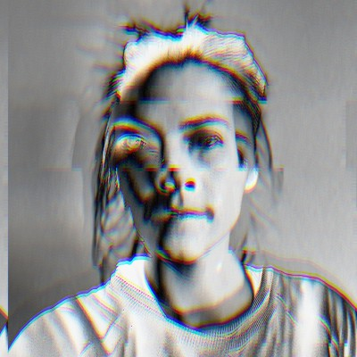

Nerd 7: Rosa Schuurman
Circuit Bending
Samenvatting
Deze week gaf Rosa Schuurmans een lezing tijdens de Weekly Nerd sessie. Rosa is een CMD-alumna die heeft gewerkt bij Elastique en Wetteloos, en nu haar eigen bedrijf, Vitrinekast, runt. De lezing ging voornamelijk over het concept van circuit bending.
- Circuit BendingDit is de creatieve manipulatie van circuits in elektronische apparaten om nieuwe muziek of visuele instrumenten te creëren. Het proces omvat vaak het herbedraden en modificeren van bestaande elektronische apparaten om onverwachte en unieke geluiden of beelden te genereren.
Reflectie
Hoewel Rosa's lezing over circuit bending een interessante niche van creative coding behandelde, kon het onderwerp mijn aandacht niet vasthouden. Mijn gebrek aan interesse in circuit bending maakte het moeilijk voor mij om echt betrokken te raken bij de inhoud van de presentatie. Ondanks dat vond ik Rosa's tips voor het vinden van een stage nuttig en praktisch.
De lezing zelf was goed opgebouwd en Rosa presenteerde met enthousiasme, maar de specifieke focus op circuit bending was gewoon niet relevant voor mijn interesses en toekomstige plannen. Hierdoor was het voor mij moeilijk om waardevolle inzichten of inspiratie uit de sessie te halen.
Conclusie
Rosa Schuurmans' lezing over circuit bending was een goed gepresenteerde sessie, maar sloot niet aan bij mijn interesses en behoeften. Hoewel ik weinig nieuwe kennis heb opgedaan, waardeerde ik haar praktische tips voor stagezoekenden. Ik beoordeel deze Weekly Nerd sessie met een rating van 4/10.